Project
1.0
Conducted from January 12 to 20, 2156 by a team of paleoichnologists, the "Lux Vestigium" expedition had as its objective the exploration of a building located in what used to be the 4th arrondissement of Paris before the city was completely submerged by the rising waters, then rediscovered following the gradual retreat of the seas and oceans due to an isostatic shock. The expedition wanted to report on the species of cnidarians that had settled in these man-made structures and to study their evolution and adaptation in these new places, very different from the abyssal depths they knew before the eustatic disturbances we have been experiencing since 2054.
As these species do not have skeletons, our research focused on revealing the traces of bioluminescence that they produced, traces that we are still able to capture today.
With the help of our specialized equipment, and using spectral photometry and carbon 14 dating tools, we were able to measure and analyze many bioluminescence phenomena produced by these cnidarian species that you will be able to observe during this restitution.
 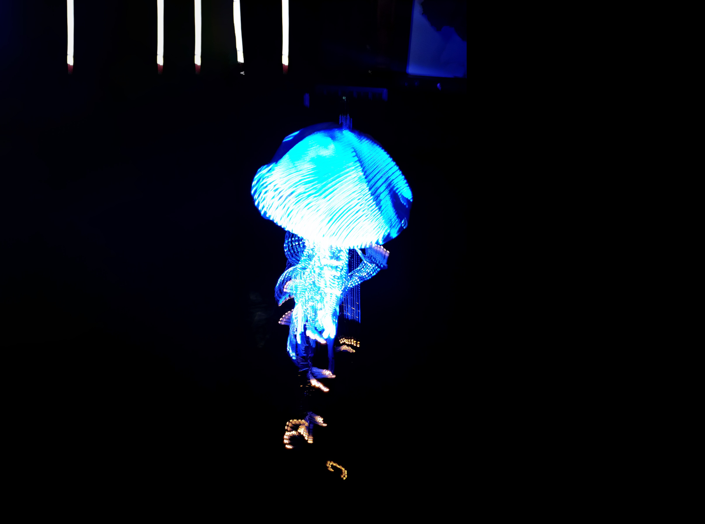
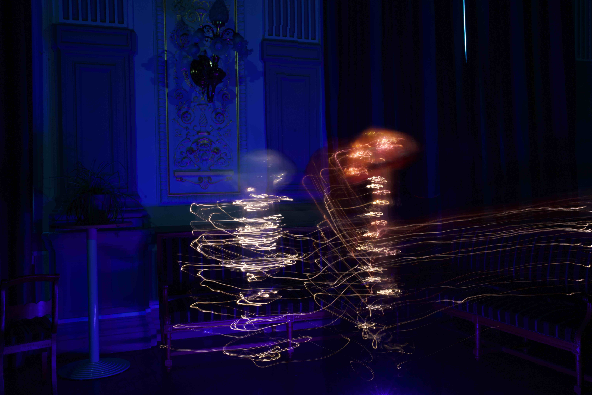
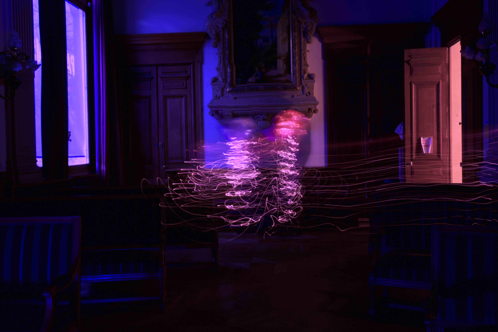
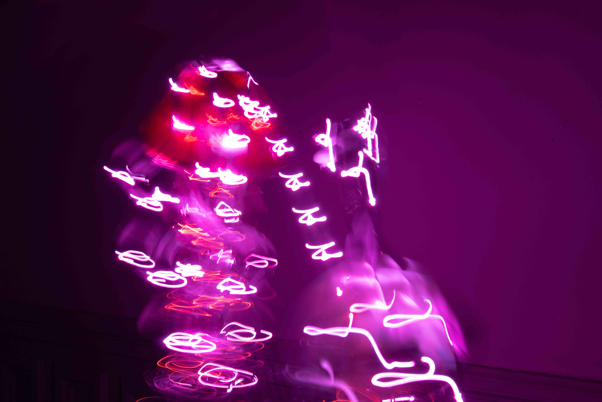
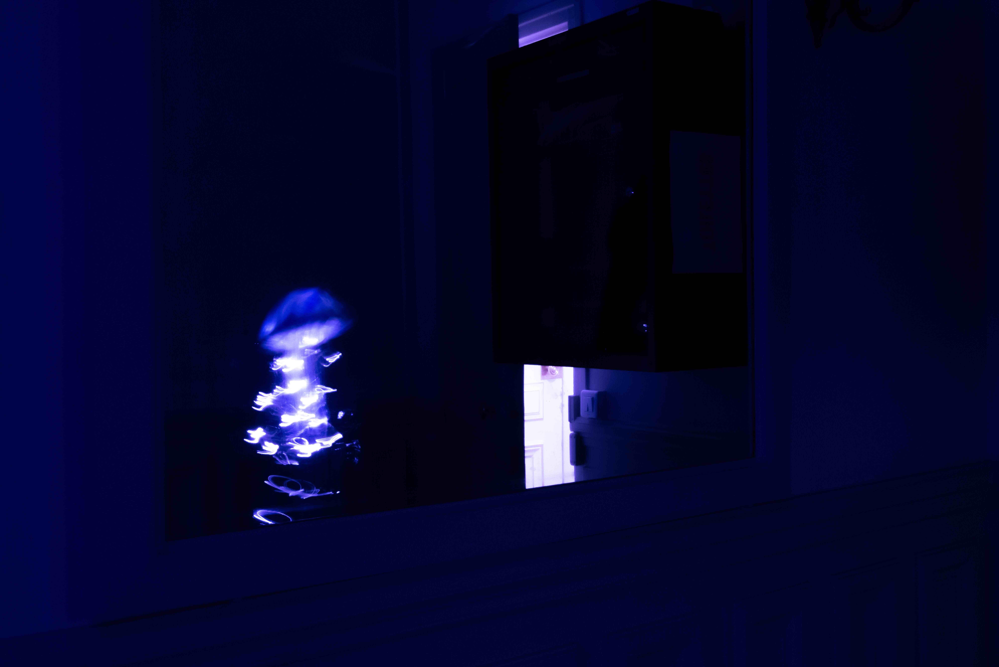
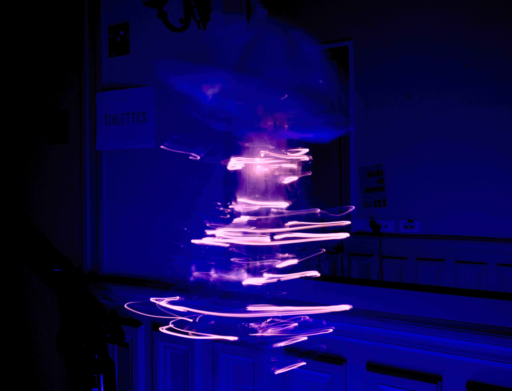
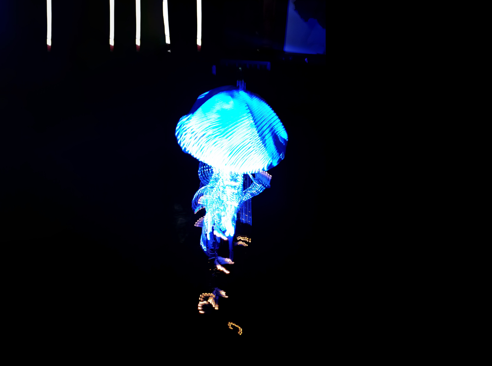
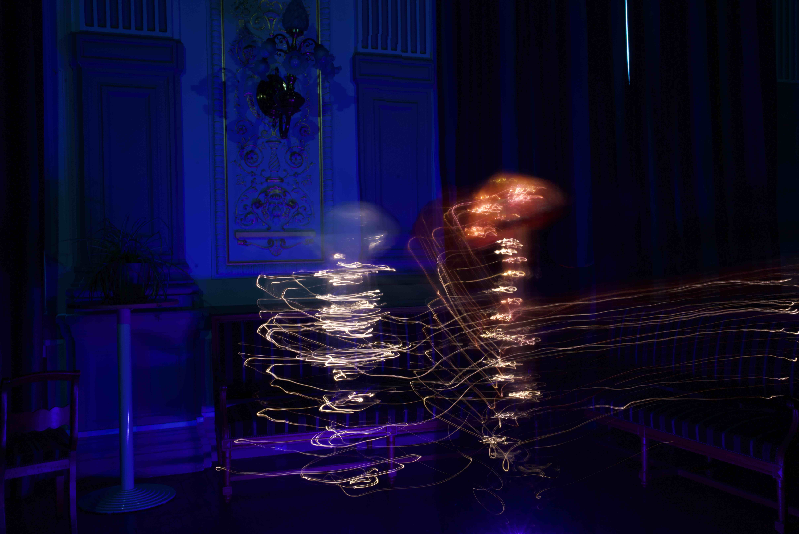
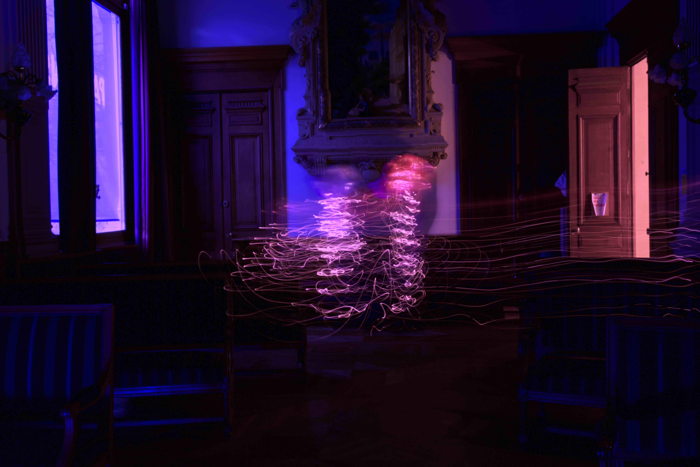
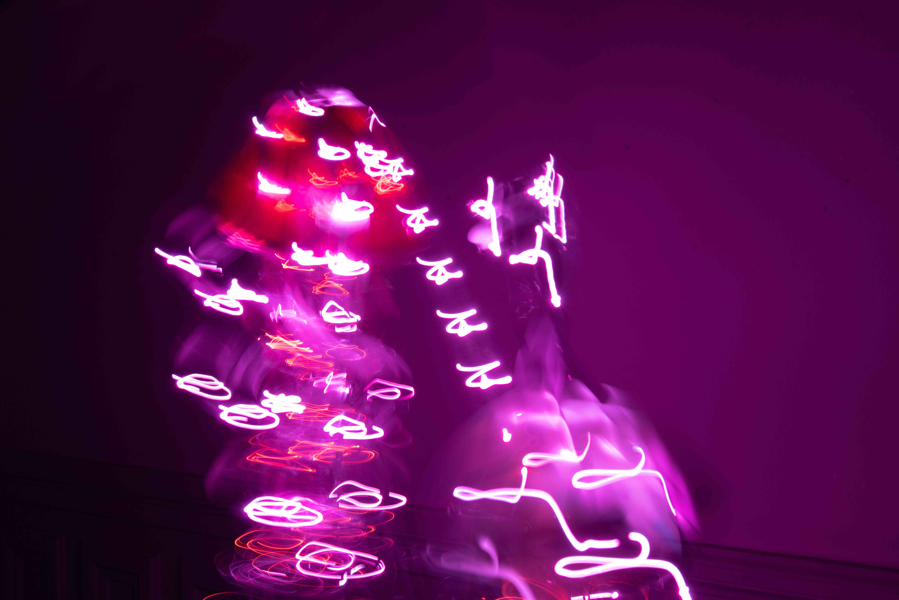
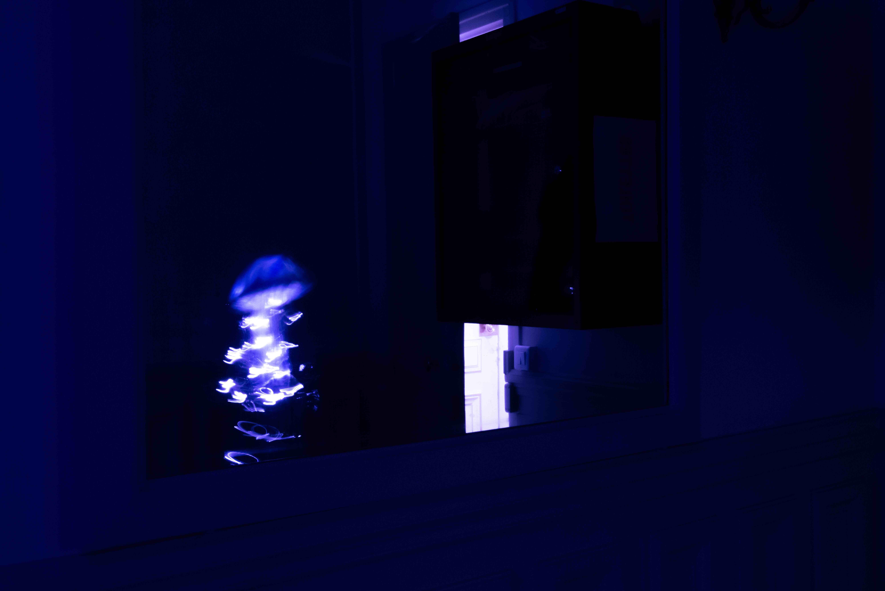
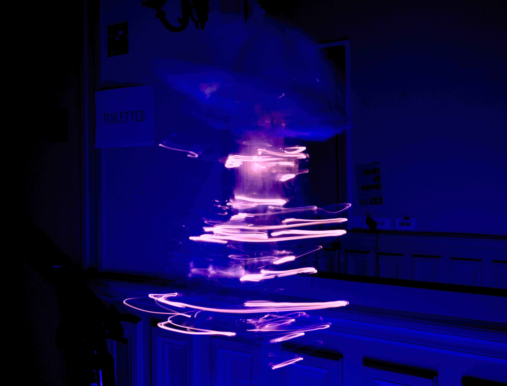